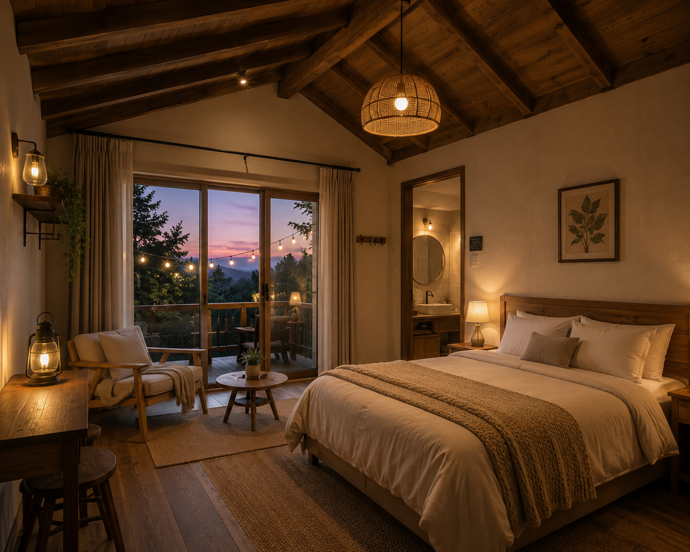
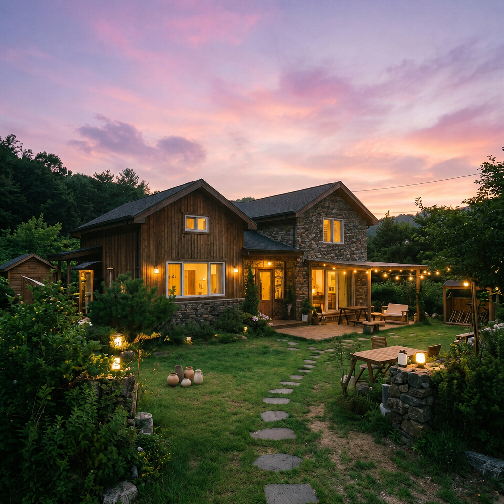

ONE PRIVATE VILLA · THREE ROOMS
STAY
WITHIN
THE LANDSCAPE
01
SCROLL TO EXPLORE ↓머무는 동안 풍경의
일부가 되는 경험.
01 / ABOUTSTAY LUMÉ
자연과의 거리를
가장 가깝게.
강릉의 조용한 풍경 안에 자리한 스테이루메는 한 팀만을 위한 독립된 공간입니다. 창으로 들어오는 빛과 계절의 변화를 느끼며, 일상 밖의 시간을 온전히 누릴 수 있도록 설계했습니다.
- TYPE
- PRIVATE VILLA
- CAPACITY
- UP TO 6 GUESTS
- LOCATION
- GANGNEUNG, KOREA
LESS, BUT BETTER.
© STAY LUMÉ02 / ROOMSTHREE DISTINCT STAYS
각자의 리듬에
맞춘 세 공간.
인원과 여행의 목적에 따라 선택할 수 있는
세 가지 객실을 준비했습니다.
03 / FACILITIESTHE DETAILS OF REST
STAY, UNHURRIED
편안한 하루를
완성하는 디테일.
WARM WATER
계절과 관계없이 따뜻한 온도를 유지하는 프라이빗 풀에서 조용한 시간을 보낼 수 있습니다.
OUTDOOR TABLE
바람과 빛을 느끼는 야외 다이닝 공간. 여행의 저녁을 위한 기본 바비큐 시설을 준비했습니다.
SLOW MORNING
늦게 시작해도 괜찮은 아침. 객실 안에서 편안하게 머무를 수 있는 기본 비품을 갖췄습니다.
THE ART OF PAUSE
“좋은 휴식은STAY LUMÉ / GANGNEUNG
일정이 아니라
감각에서 시작됩니다.”
04 / RESERVATIONPLAN YOUR STAY
당신의 다음
머무름을
기다립니다.
예약 가능 여부와 객실별 상세 안내는
아래 채널에서 빠르게 확인하실 수 있습니다.
RESERVATION DESK
010 0000 0000 ↗KAKAO CHANNEL ↗ADDRESS
강원특별자치도 강릉시 루메길 21GANGNEUNG, SOUTH KOREA지도에서 보기 ↗